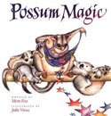
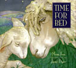
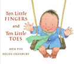
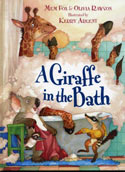

2012 Book Week Author
Mem Fox
Mem Fox was born in Australia, grew up in Africa, and studied drama in England. She returned to Adelaide, Australia, in 1970, where she has lived with her husband, Malcolm, and daughter, Chloë, happily ever after.
Fox is Australia’s most highly regarded picture-book author. Her first book,

Possum Magic, is the nation’s best-selling children’s book ever, with sales exceeding four million. In the USA, Time for Bed and Wilfrid Gordon McDonald Partridge have each sold more than a million copies. Time for Bed is on Oprah’s list of the 20 best children’s books of all time.

Fox has written more than 35 picture books for children and five non-fiction books for adults, including the best-selling Reading Magic, aimed at parents of very young children.
Ten Little Fingers and Ten Little Toes, beautifully illustrated by Helen Oxenbury, was on the New York Times bestseller lists for 18 weeks in 2008-09. Its Italian edition won the “best book for 0-3 year olds” award at the International Book Fair in Turin in May 2010.As an associate professor in literacy studies at Flinders University in Adelaide, Fox taught teachers for 24

years until her early retirement in 1996. She has received many civic awards, honors, and accolades in Australia, including two honorary doctorates. She has visited the United States more than a hundred times, mostly in her role as a literacy expert. She is an influential international consultant in literacy, but she pretends to sit around writing full time.Her latest book is A Giraffe in the Bath. She hopes four year olds and over—including adults—will adore it.